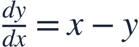
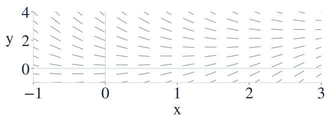
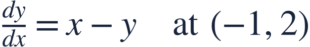

Slope fields
기울기장

A slope field gives a short tangent direction at each point without first solving the equation.
기울기장은 방정식을 풀기 전에 각 점의 짧은 접선 방향을 보여 줍니다.

A slope field gives a short tangent direction at each point without first solving the equation.
기울기장은 방정식을 풀기 전에 각 점의 짧은 접선 방향을 보여 줍니다.
Substitute both coordinates into the right-hand side to get the slope.
우변에 두 좌표를 모두 대입하여 기울기를 구하세요.

Segments are horizontal on y=x, positive below it, and negative above it.
y=x 위의 선분은 수평이며 그 아래에서는 양의 기울기, 위에서는 음의 기울기입니다.
At (1,3), draw a short downward-sloping segment.
(1,3)에서는 오른쪽 아래로 향하는 짧은 선분을 그립니다.
Equal coordinates give a horizontal segment.
두 좌표가 같으면 선분이 수평입니다.
A solution curve follows the local segment directions.
해 곡선은 각 점에서 선분의 방향을 따라갑니다.
A field segment indicates slope, not the full solution line.
기울기장의 선분은 기울기 방향이며 해 전체를 나타내는 직선은 아닙니다.

Find the segment slope.
그 점에서 선분의 기울기를 구하세요.